I'm a problem solver who thrives in diverse environments, from research labs to factory floors.
I love tackling challenges that blend creativity with technical expertise, always looking for new ways to innovate and improve.
Beyond engineering, I stay curious—whether experimenting in the kitchen, learning new crafts, or exploring the outdoors.
Uses a spinning array of mirrors and a pulsed laser to project text using the persistence of vision effect...
Uses a spinning array of mirrors and a pulsed laser to project text using the persistence of vision effect.
The base of the build is a stripped-down floor fan with a shaded pole AC motor. These motors have low torque but the speed is very stable, making it well suited for this application.
They also allow me to use a lighting dimmer switch to control the speed.
Mounted to the motor's axle is the mirror array.
Each mirror is set to slightly different angle so that they draw vertically stacked scanlines when they spin past the laser.
The angle is set by hand, by tightening the screws at the top of each plastic mirror housing plate.
Using a homemade constant current laser driver, the laser is pulsed on the nanosecond scale, according to what mirror and data happens to be current.
Each letter is predefined using an array of binary on/off commands forming a pixel grid.
The rows of these arrays are concatenated such that a binary sequence is created forming a slice of each letter in the message.
As the laser draws one scanline, this sequence is used to pulse out the message.
Hall effect sensors and hardware interrupts are used for keeping track of the current mirror with accurate feedback.
The system does have some limitations.
It can only display about 15 letters due to trade-offs between processing power, visual resolution, and motor speed.
Also, the system has requires software tuning of the timing every so often.
This involves adding or removing software delay to some of the scanlines in the form of NOP (no operation) cycles, which is more accurate than the delay() function.
This allows for precise alignment so the letters look clean and straight.
Basically every component could be upgraded. As it stands, the only way for the system to get display text is through the serial port, so a computer must be plugged in to pass data.
Adding a Bluetooth or wifi module would be nice, to control it from a phone.
A microcontroller with a faster clock speed like a Teensy 4.1 would give me a little more leeway in terms of clock cycles per revolution.
The laser could be more powerful so it would be visible anywhere except a completely dark room. This would require new driver hardware.
Color mixing would be very interesting to add. Support for images or even gifs would be a cherry on top.
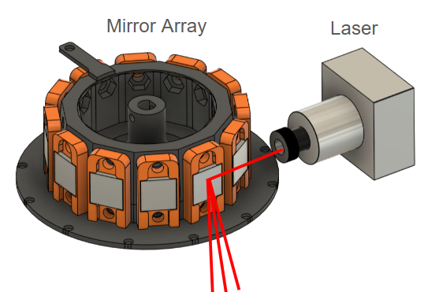
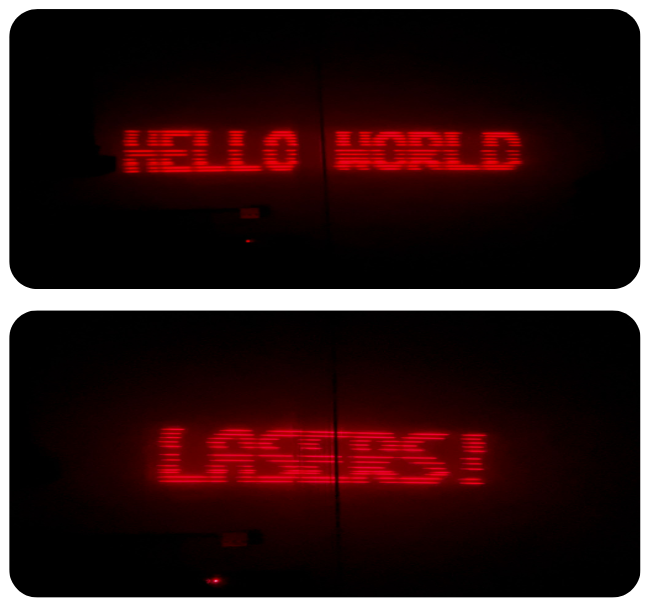
Strandbeest Walking Robot
Fully 3D printed walking robot based on Theo Jansen's leg linkage...
Fully 3D printed walking robot based on Theo Jansen's leg linkage.
The original linkage lengths were generated by Theo Jansen running an evolutionary algorithm back in the 90's.
They create a beautiful and organic walk cycle that I built this robot around.
Jansen originally built these to be wind-powered and would leave them to wander beaches of Holland alone.
In the same spirit, I wanted this one to have some autonomous capalities.
The most current version sort of achieves this (not pictured below). It can navigate semi-autonomously to a setpoint using ultrasonic and infrared sensors.
The setpoint must be the operator repeatedly pressing a button on the IR remote, giving it many signals over time it can use to determine direction by sweeping its head around.
It can also be controlled manually from an IR remote.
The ultrasonic distance sensor and a rudimentary path optimization algorithm allows the robot to plan and update based on new input about its environment.
It creates a "map" of known obstacles, and uses a heavily-biased RRT algorithm to path in the direction of the operator.
At the moment, this algorithm is run in MATLAB on my laptop, usually requiring a second person to follow the robot around to make sure the umbilical USB cable connecting the two stays plugged in.
This is clearly an area for improvement that could be solved by running it onboard with a Raspberry Pi.
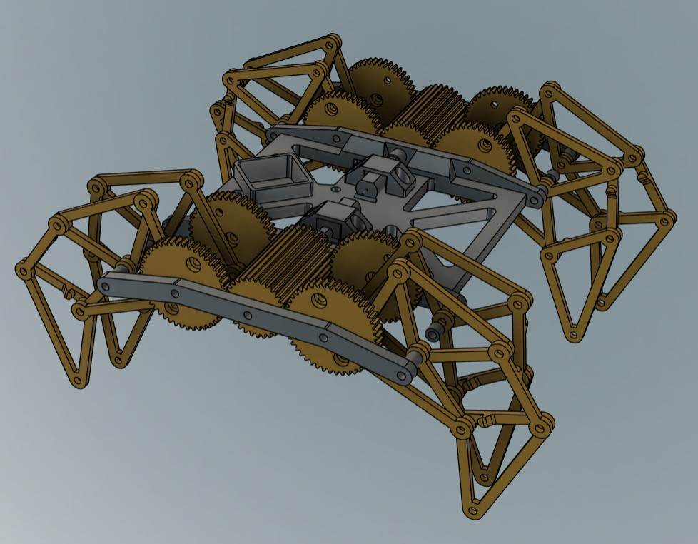
Acoustic Levitation and Brainwave Sensing
Levitated small objects and shifted their location in 3D space based on the user's brain state...
Levitated small objects and shifted their location in 3D space based on the user's brain state,
using an acoustic levitator, an EEG cap, and a pretrained classification algorithm.
This was my senior design project, under Dr. Zenhua Tian.
Three things had to be done for this project to succeed: levitate an object, move it around in space, and collect brainwaves from a user to control it.
Acoustic levitation is fairly straightforward. The levitator is made up of two arrays of ultrasonic transducers, which produce a standing wave between them.
This wave has points called nodes where the local changes in air pressure can apply stabalizing force to objects within, enabling it to hold small objects in place.
Translating the object is acheived by varing the phase of one of the transducer arrays with respect to the other.
This moves the position of the nodes and any objects trapped will come along for the ride. This can be directly observed in the video below, as a styrofoam bead traces out a sinusoidal pattern.
Now we must determine how to control this movement.
Data was collected using an electroencephalogram (EEG) cap which detects electrical signals arising from brain activity.
The cap feeds this data to a purchased circuit board that performs some preprocessing and initial feature recognition functions.
This allows for faster and more accurate computations in the next step.
The board then passes the preprocessed data to a computer, which ran a clustering algorithm to determine what the user wants to occur.
All these steps will run continuously and in real-time.
The initial plan was to be able to determine many different brain states, possibly reflecting different types of thought or reactions to different stimuli.
Ultimately though, we were only able to determine two brain states, basically just "thinking" and "not thinking".
These two inputs were then tied to the control such that when the user thought hard enough, the bead in the levitator would trace out a predetermined pattern.
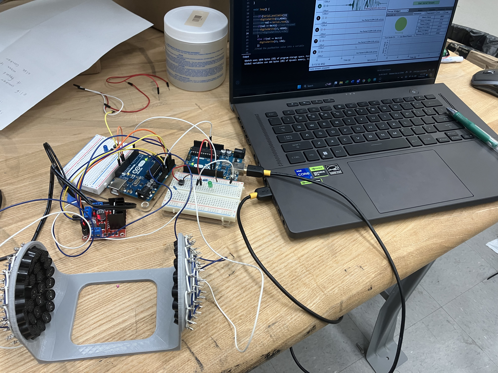
Experience
Research Fellow
Virginia Tech IRES Brunei
05/2024 – 09/2024
• Developed unjammable local positioning system using an algorithm trained on GNSS data
and an echolocating sonar robot, enhancing reliability in GNSS-denied environments.
• Simulated bat flight mechanics using an acoustic array and optical reconstruction.
• Collaborated globally with biologists, computer scientists, and engineers.
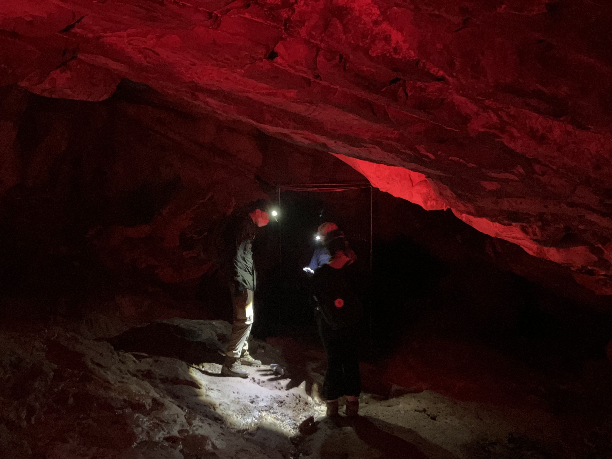
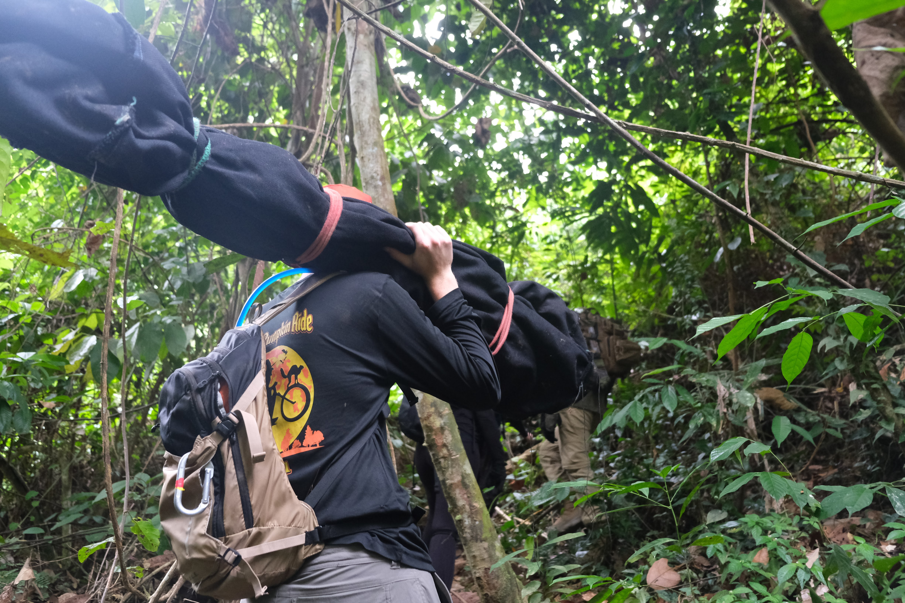
Manufacturing Engineering Co-op
Volvo
05/2022 – 12/2022
• Developed robotic paths and optimized part flows for upcoming semi-truck product line.
• Designed and constructed a cart for truck cab transport utilizing safety interlocks, replacing forklift usage and reducing cycle time by 30%.
• Refined tooling designs with a focus on throughput and ergonomics, increasing workplace safety and reducing operational downtime by 12%.
• Led a major SOP overhaul, enhancing quality control through cloud support and increasing adaptability to support evolving production requirements.
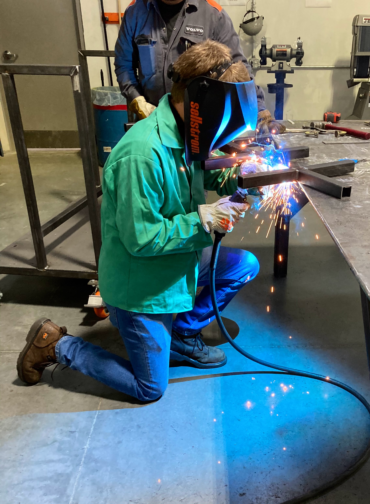
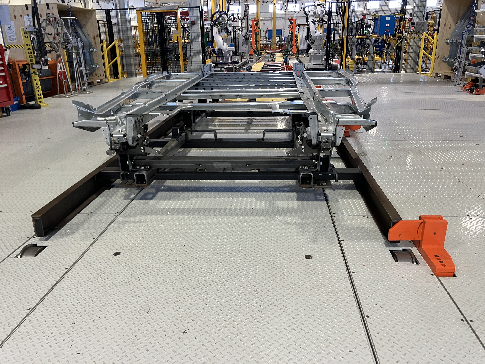
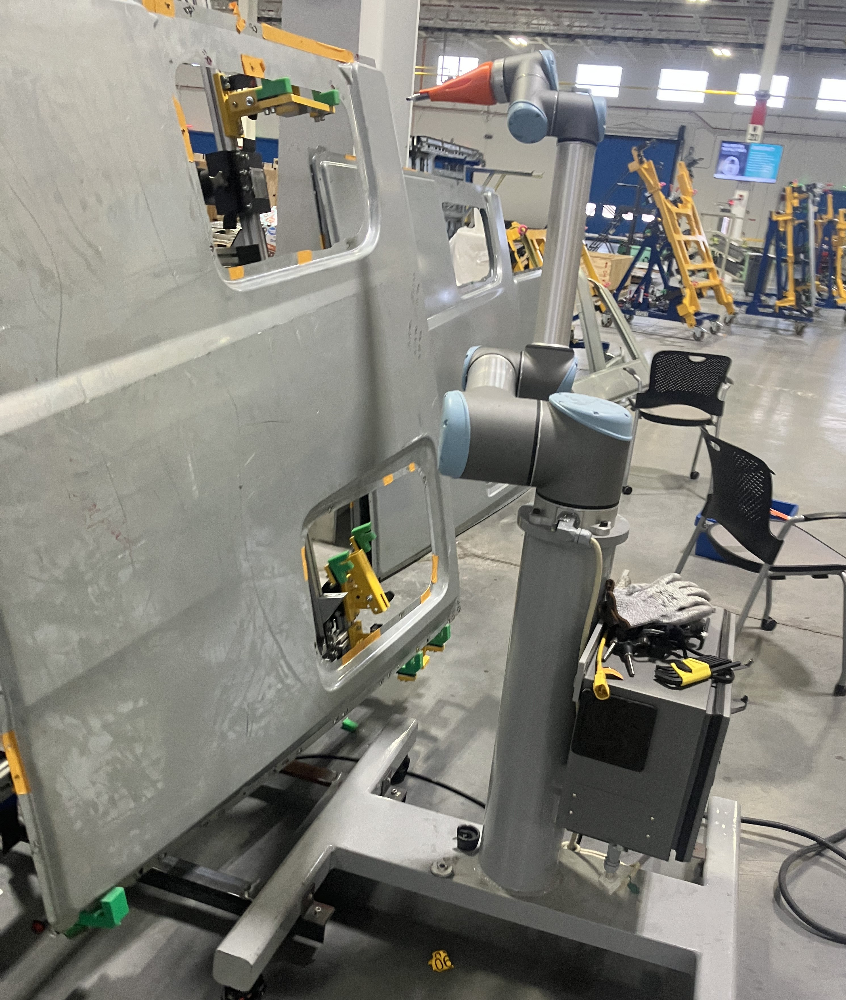
Applications Engineering Co-op
Altec Inc
01/2021 – 08/2021
• Developed custom structural assemblies, including truck beds, ladders, and tailshelves, enhancing vehicle functionality.
• Designed and implemented customer-specific electrical and hydraulic systems, delivering tailored solutions to meet diverse client requirements.
• Fabricated new hydraulic test unit hardware for cranes and derricks, improving testing efficiency by 20%.
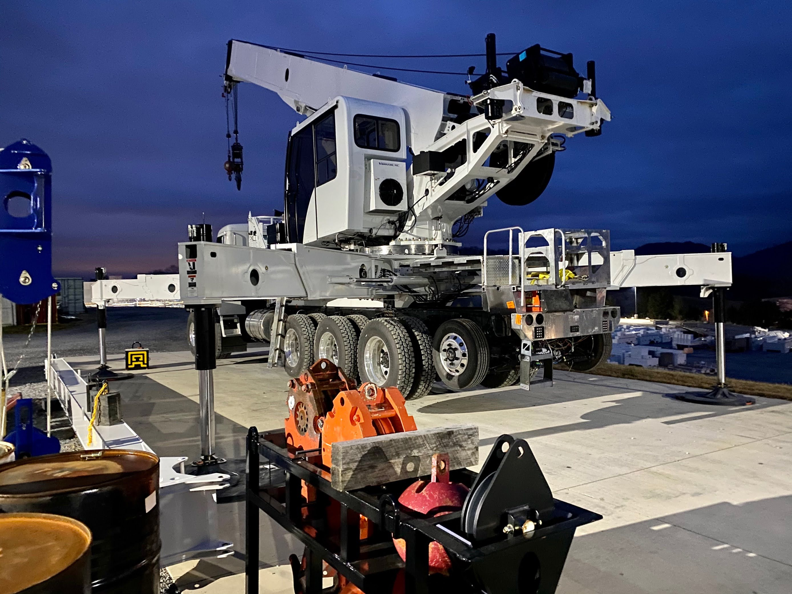
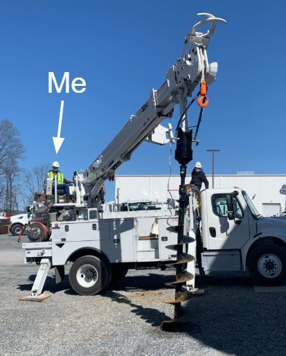
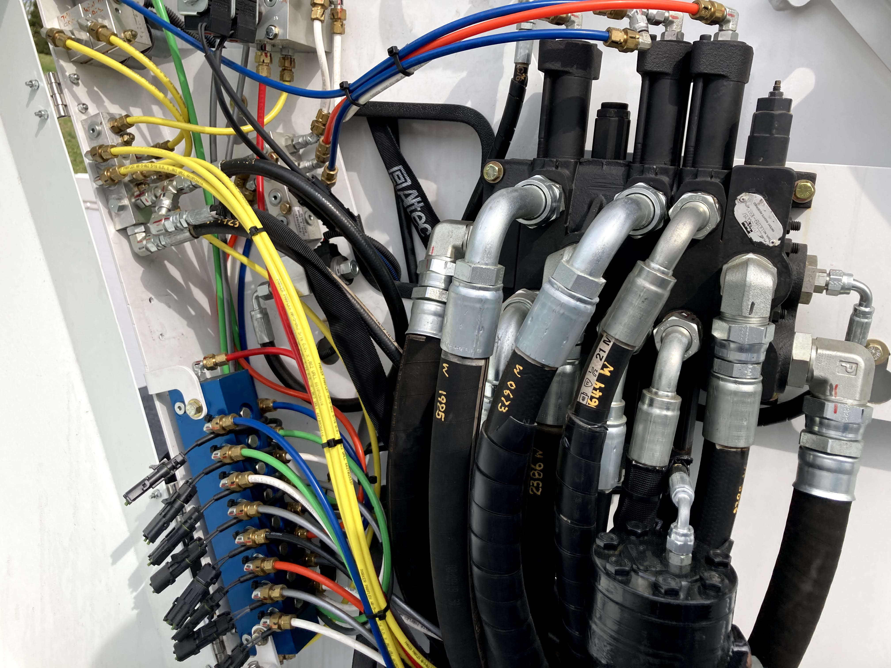
Interests
Nature Macrophotography
I'm interested in exploring the beauty of the hidden details of the natural world.
.jpg)


 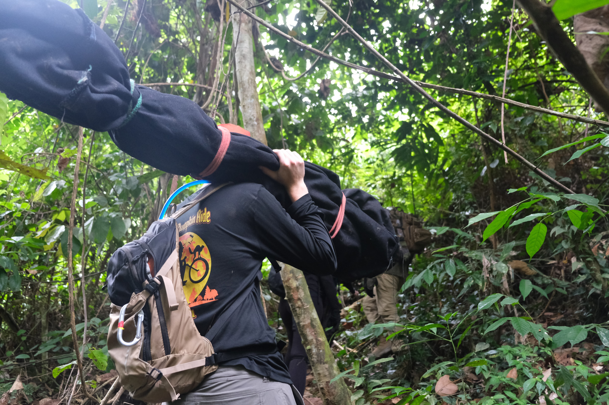
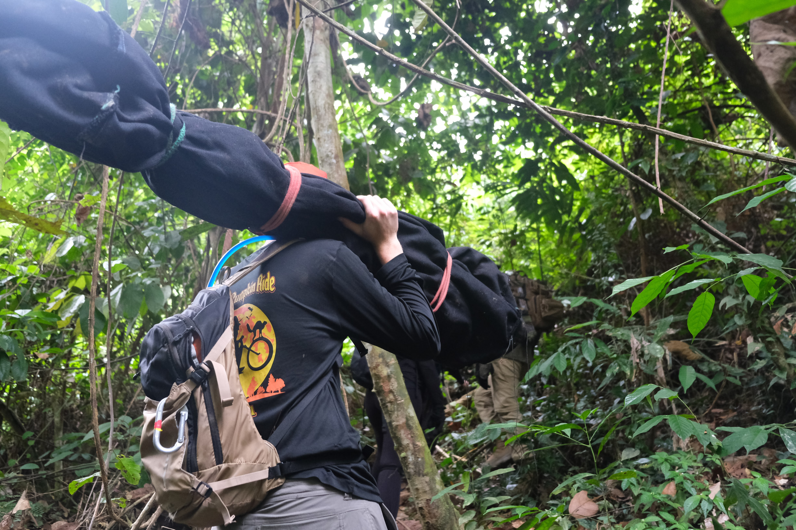


 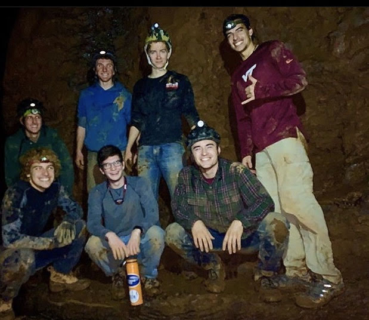
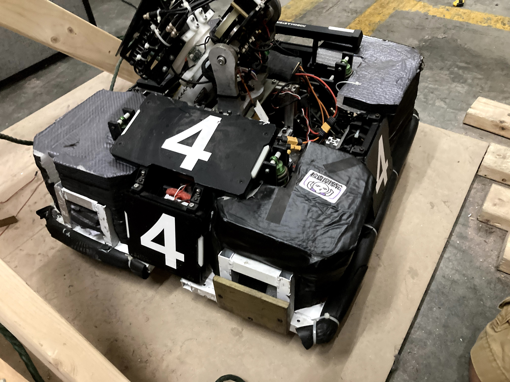
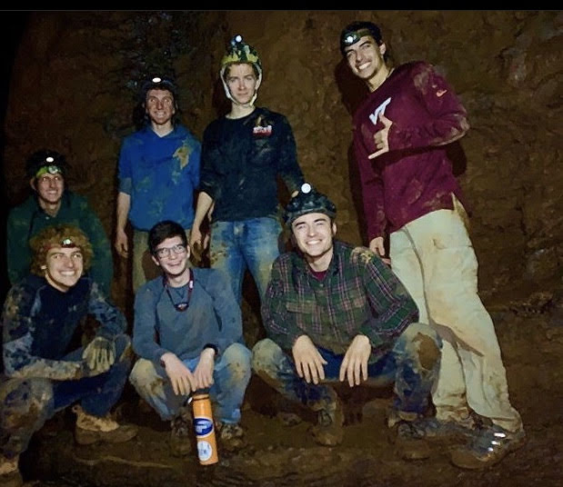
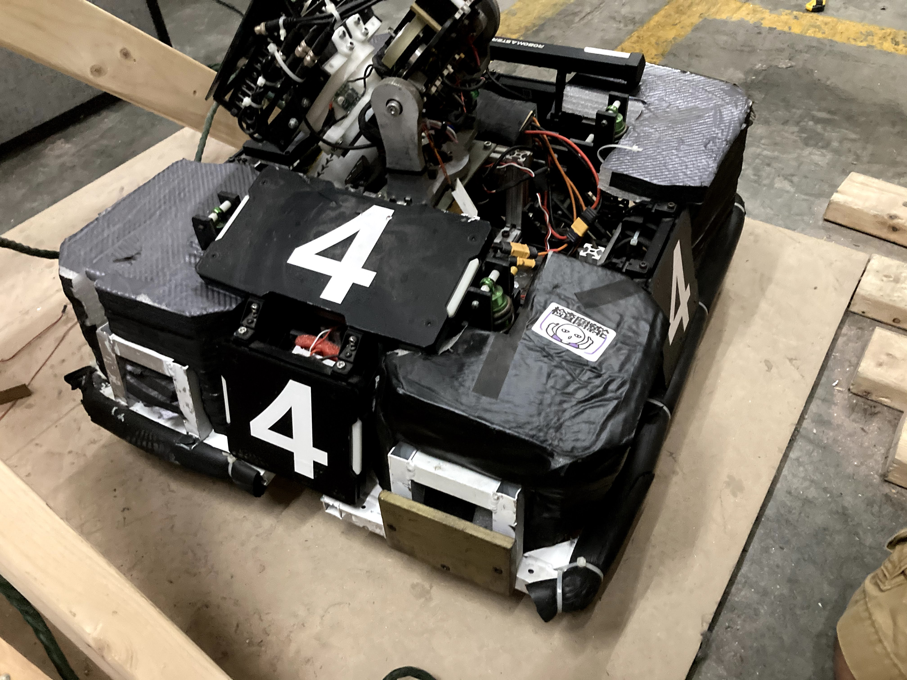